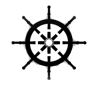

Congratulations! We are now aboard the spaceship to tour the exquisite tourist spots in the Solar System.
Now, you can either choose your own destination as you please by steering this ship OR you can let Jaadoo pilot this spaceship and he'll show you around the places as we have planned.
To steer on your own, take command of the spaceship by hovering over the top left wheel icon. But if you are more comfortable as the co-pilot, just remain on the track by clicking on the UFO.
Now, you can either choose your own destination as you please by steering this ship OR you can let Jaadoo pilot this spaceship and he'll show you around the places as we have planned.
To steer on your own, take command of the spaceship by hovering over the top left wheel icon. But if you are more comfortable as the co-pilot, just remain on the track by clicking on the UFO.
